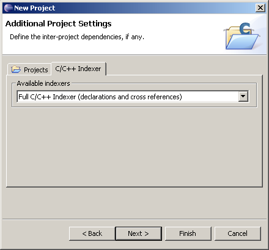

Software Applications
You can select which C/C++ Indexer to use for your project from this page of the wizard. The indexer is necessary for search and related features, like content assist.

| Name | Function |
|---|---|
| Available Indexers | Selects the Indexer to use for this project; No Indexer disables indexing. Some indexers will display additional options below the indexer selection box. |

Software Platform
Managed Make, Name
Managed Make, Select a
Project Type
Managed Make, Referenced
Projects